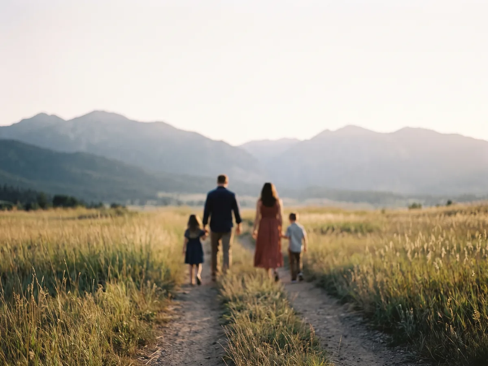
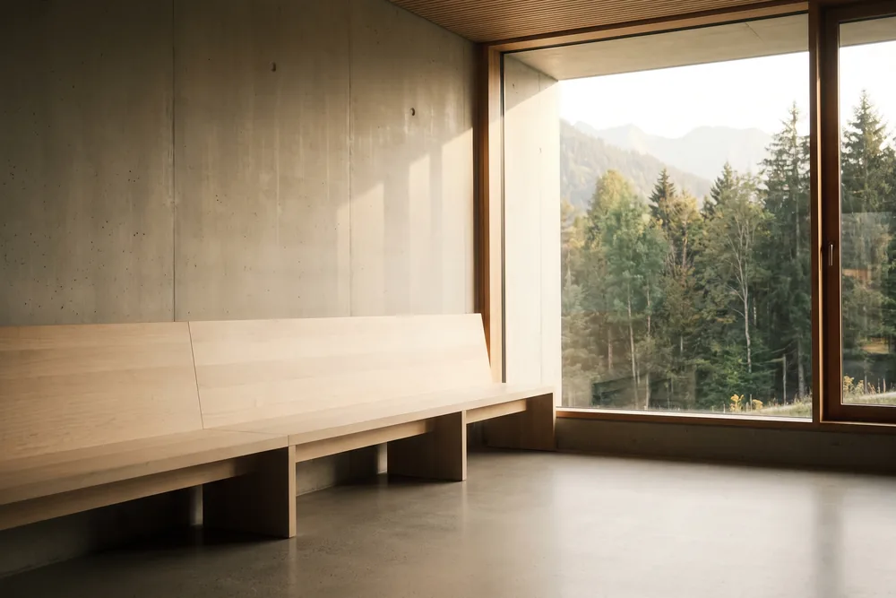

L’assurance qui survole la frontière
Ce qui est couvert,
formule par formule.
Trois formules, pas six niveaux. Chacune rembourse les mêmes choses en Suisse et se distingue sur ce qu’elle ajoute en France. Voici le détail, poste par poste.

Essentiel
Vous vous soignez surtout en Suisse. En France, vous voyez un médecin de temps en temps, vous portez des lunettes simples et vous consultez à l’occasion un ostéopathe.
Choisir EssentielEn France
- Soins courantsMédecin traitant, spécialiste, analyses, radiologie, pharmacie remboursable.150 % de la base
- HospitalisationFrais de séjour aux frais réels, forfait journalier compris.150 %, chambre 30 € par jour
- OptiqueUne paire tous les deux ans, ou tous les ans pour un enfant ou en cas de changement de vue.125 € pour des verres simples
- DentaireLe panier 100 % Santé reste sans reste à charge.150 %, plafond 900 € par an
- Médecines complémentairesOstéopathe, chiropracteur, psychologue, en France comme en Suisse.30 € par séance, quatre par an
En Suisse
- Votre quote-partLes 10 % qui restent à votre charge après la franchise, jusqu’à 700 CHF par an.Remboursée à 100 %
- Votre contribution journalièreLes 15 CHF facturés pour chaque jour passé à l’hôpital.Remboursée à 100 %
Confort
Vous vous soignez des deux côtés de la frontière, souvent avec vos enfants, et vous savez que des soins dentaires ou des lunettes plus complexes vous attendent.
Choisir Confort
En France
- Soins courantsDe quoi absorber les dépassements d’honoraires courants en France.200 % de la base
- HospitalisationLe niveau qui compte si la chambre particulière vous importe.200 %, chambre 50 € par jour
- OptiqueMontures comprises, dans la limite réglementaire de 100 €.225 € pour des verres simples, 325 € pour des verres complexes
- DentaireLe plafond passe à 1 650 € à partir de la troisième année d’adhésion.175 %, plafond 1 100 € par an
- Médecines complémentairesOstéopathe, chiropracteur, psychologue, en France comme en Suisse.40 € par séance, quatre par an
En Suisse
- Votre quote-partLes 10 % qui restent à votre charge après la franchise, jusqu’à 700 CHF par an.Remboursée à 100 %
- Votre contribution journalièreLes 15 CHF facturés pour chaque jour passé à l’hôpital.Remboursée à 100 %
- TransportCe que la LAMal ne prend pas en charge lors d’un transport sanitaire.50 € par an
Ce qui ne change
jamais.
Ces services sont identiques quelle que soit la formule que vous choisissez. Ils ne dépendent ni de votre âge, ni de votre régime.

- Téléconsultation, jour et nuitIllimitée et sans frais, des deux côtés de la frontière, surtout utile quand votre cabinet habituel est fermé.
- Tiers payant en FranceVous n’avancez rien chez le pharmacien, chez le médecin ni à l’hôpital, et les décomptes de la Sécurité sociale nous parviennent seuls.
- 100 % SantéLes lunettes de classe A, les prothèses du panier 100 % Santé et les aides auditives de classe I ne vous laissent aucun reste à charge.
- Assistance à domicileJusqu’à 500 € par an d’aide à domicile, de garde d’enfants ou de transport d’un proche, en cas d’hospitalisation.
- Protection juridique santéDes juristes vous accompagnent en cas de litige de santé, en France comme en Suisse, sans franchise.
- Soins urgents partout dans le mondeLors d’un séjour de moins de trois mois hors de France et de Suisse, le contrat complète ce que votre régime prend en charge.
- Aucun questionnaire médicalNi formalité médicale, ni délai d’attente, quel que soit votre état de santé au moment de l’adhésion.
- Aucun fraisNi frais de dossier, ni droit d’entrée, ni cotisation d’association. Le prix affiché est le prix payé.
Ce qui n’est jamais
remboursé.
Nous préférons vous le dire ici plutôt que dans une note de bas de page. Ces quatre postes restent à votre charge, quelle que soit la formule.
- La franchise LAMalLes 300 CHF annuels que vous réglez avant tout remboursement de votre caisse suisse.
- La chambre privée ou semi-privée en SuisseSeule la division commune est couverte.
- Les lunettes, le dentaire et la pharmacie achetés en SuisseLes forfaits d’optique et de dentaire s’utilisent en France.
- Un séjour programmé en Suisse sans autorisation préalablePour un affilié à la Sécurité sociale française, le formulaire S2 reste indispensable.
Deux assureurs français couvrent la franchise LAMal de 300 CHF. Nous ne la couvrons pas, et nous vous le disons : si c’est votre principal reste à charge, comparez avant de nous choisir. Le guide vous explique ce que chaque régime laisse à votre charge.
Le même contrat,
quel que soit votre régime.
Que vous cotisiez à l’assurance maladie suisse ou à la Sécurité sociale française, vos garanties en France sont identiques. Seule change la façon dont vous êtes remboursé en Suisse.
- Vous êtes à la LAMalNous remboursons votre quote-part et votre contribution journalière à 100 %. La franchise reste à votre charge.
- Vous êtes à la CMUNous complétons la part de la Sécurité sociale sur vos soins urgents en Suisse, et sur les soins reçus en marge de votre travail.

Trois gestes,
et vous êtes couvert.
Aucune pièce à joindre avant de signer, aucun questionnaire médical, aucun rendez-vous. Votre numéro de sécurité sociale suffit.
Commencer mon adhésion
- Votre situationVotre âge, votre régime et la composition de votre foyer. Trente secondes, sans laisser vos coordonnées.
- Votre formuleVous choisissez, et nous vous disons laquelle suffit. Le prix détaillé s’affiche ligne par ligne.
- Votre signatureEn ligne, depuis votre téléphone. Votre couverture démarre à la date d’effet que vous avez choisie.
Vous n’avez qu’une pièce à fournir, et c’est après la signature : un justificatif de votre statut de frontalier, que vous photographiez avec votre téléphone. Le délai de renonciation est de 14 jours et s’exerce en ligne. Maquette de travail : les garanties et les tarifs restent à confirmer avec l’assureur.